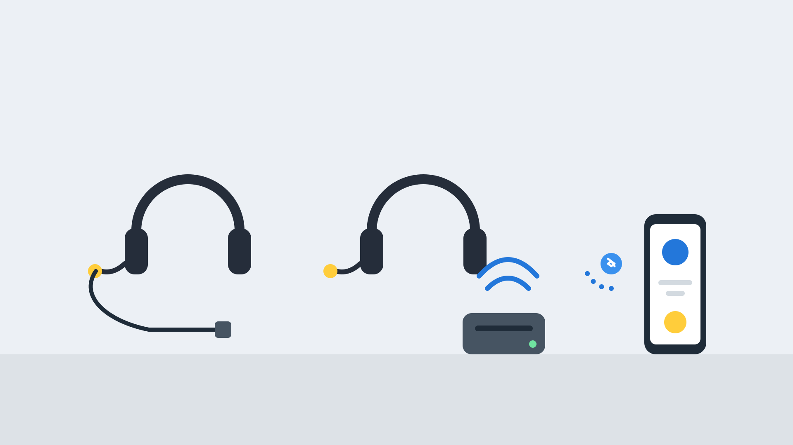
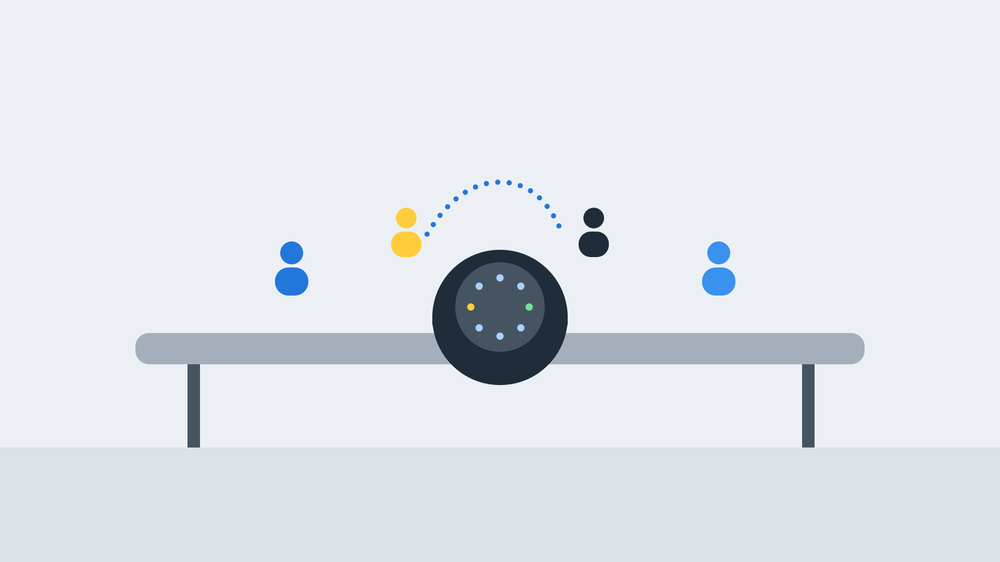
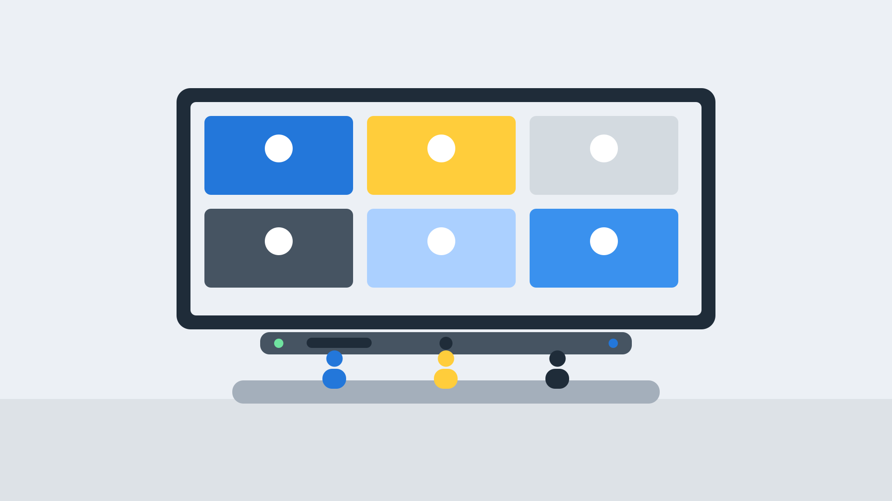
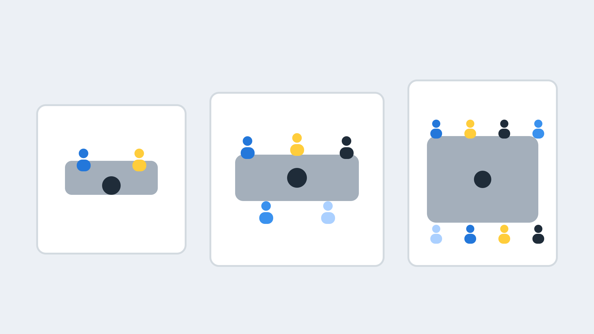

Extera Direct
Headsets, conferencing equipment and office products, with expert advice.
Telecoms and office products at great prices
Extera Direct is our online store, where you can buy a wide range of telecoms and office products without a quote or a call. Headsets, conference phones and meeting room equipment are the most popular, so we have put a buying guide below.
- Business phone systems
- Telephones, headsets and conference phones
- Video conferencing and meeting room equipment
- Networking, installation and office products
What you can buy
Business phone systems
Systems for small offices and growing teams.
Telephones
Desk phones and cordless handsets.
Headsets
Corded and cordless headsets for office and contact centre use.
Conference phones
Clear audio for meeting rooms.
Networking and installation
Cabling, switches and installation products.
Office products
Everyday office supplies and equipment.
A headset for every way of working
A good headset improves call quality, cuts background noise and lets people use both hands. The right one depends on how a person works, so we help you match the headset to the role, the phone system and the budget.
- Wired USB headsets for desk-based staff
- Wireless DECT headsets for roaming around an office
- Bluetooth headsets for mobiles and flexible working
- Noise-cancelling microphones for open-plan offices and homes

Match the headset to the person
A quick guide. Ranges and features vary by model, so check the product page for the exact figures.
| Type | Best for | Good to know |
|---|---|---|
| Wired USB | Desk-based staff, contact centres, home working | Plug in and use, no charging. A cable to a computer or desk phone. |
| Wireless DECT | Reception, supervisors, anyone who moves around | A base station gives stable, long-range wireless, typically across a whole office floor. |
| Bluetooth | Mobile and hybrid workers | Works with a phone and, via a USB dongle, a computer. Range is shorter than DECT. |
| Single ear (mono) | Staff who need to hear the room around them | Keeps one ear free for colleagues and visitors. |
| Both ears (duo) | Busy or noisy environments | Blocks more background noise so calls are easier to hear. |
What to look for in a business headset
Certified for your platform
Look for headsets certified for Microsoft Teams, Zoom or your phone system, which add one-touch call controls and a tested experience.
A good microphone
Noise reduction on the microphone matters more than on the speakers, because it decides how you sound to callers.
Battery life
For wireless models, check talk time and whether the base can charge the headset.
Comfort
Weight, ear cushions and fit matter if someone wears a headset for hours.
Quick disconnect
A quick-disconnect cable lets a headset work with both a desk phone and a computer.
Busy light
An indicator that shows when someone is on a call reduces interruptions in open-plan offices.
Be heard clearly, wherever the call is
Poor audio is the commonest reason a meeting goes badly. A speakerphone or room audio system with echo cancellation and good microphones lets everyone hear and be heard.
- Personal USB or Bluetooth speakerphones for desks and huddle rooms
- Larger conference phones for meeting rooms, including SIP models
- Expansion microphones to cover long tables
- Echo cancellation and full-duplex audio for natural conversation

Video conferencing equipment for any size of room
Video meetings work best with a camera, microphones and speakers designed for the room, not a laptop on the table. We supply and install complete room systems, from a single video bar to a full boardroom set-up.
- All-in-one video bars for huddle and small meeting rooms
- Modular systems with extra cameras and microphones for large rooms
- Displays, mounts and cabling supplied and fitted
- Systems for Microsoft Teams, Zoom or your own platform

Choose equipment by the room, not just the price
As a rule of thumb, small rooms suit a personal speakerphone or a video bar. Larger rooms need extra microphones, a bigger display and sometimes a second camera. We measure the room and the farthest seat before recommending anything.
- Count how many people will use the room regularly
- Check the distance from the farthest seat to the screen and camera
- Consider echo, windows and background noise
- Plan cabling and power, and the position of the display

| Room | People | Audio | Video |
|---|---|---|---|
| Desk or huddle | 1 to 4 | Personal speakerphone or headset | Webcam or compact video bar |
| Small meeting room | 4 to 8 | Conference phone or the video bar's built-in audio | All-in-one video bar |
| Medium meeting room | 8 to 12 | Conference phone with expansion microphones | Video bar with extra microphones, or a modular system |
| Large room or boardroom | 12 or more | Ceiling or table microphones and room speakers | Modular system with one or more cameras |
These are typical guides, not guarantees. Pickup range and room capacity vary by product, so we check each room.
Works with your phone system and meeting platform
We check that equipment works with the systems you use before you buy.
Your phone system
Headsets and handsets for 3CX, 8x8, Gamma Horizon and Avaya IP Office.
Meeting platforms
Equipment certified for Microsoft Teams and Zoom, or standard USB equipment for other platforms.
Your connection
Video needs a steady connection. See fibre broadband and leased lines.
Cabling and power
We can run network and power cabling for meeting rooms. See data cabling.
Equipment from trusted makers
We are partners of leading headset and conferencing brands, so you get advice and support, not just a box.
- Jabra Gold Partner
- Plantronics (Poly) Partner
- EPOS
- Sennheiser
- Yealink
- Cisco
How we help you choose and set up
Ask
Tell us how people work, what platform you use and your room sizes.
Recommend
We suggest equipment that suits, with a few options and prices.
Supply and install
We deliver and, for rooms, install, cable and test everything.
Support
We help with set-up, firmware updates and replacements.
Headset and conferencing equipment FAQs
Will a headset work with my phone system?
Usually yes. Most business headsets connect by USB, a quick-disconnect cable or a wireless base. We check yours against your handsets and software.
Is DECT or Bluetooth better?
DECT suits people who move around an office and need stable, long-range wireless. Bluetooth suits mobile working and personal devices, with a shorter range.
How many people can one speakerphone cover?
Personal speakerphones suit small groups. Larger rooms need a conference phone with expansion microphones. We check your room and your farthest seat.
Do I need a computer in a video-bar room?
Some video bars run the meeting app themselves, while others use a laptop or a small room computer. We advise on the best set-up for your platform.
Can you install meeting room equipment?
Yes. We supply, install and test displays, cameras, microphones and cabling, and can support them afterwards.
Can I buy online and get advice too?
Yes. You can order from Extera Direct, and call us for help choosing.
Need advice before you buy?
If you are not sure what to buy, or want a complete system supplied, installed and supported, talk to the team.
Buying a whole system?
For new phone systems, connectivity and cabling, our phone systems services include installation and support.